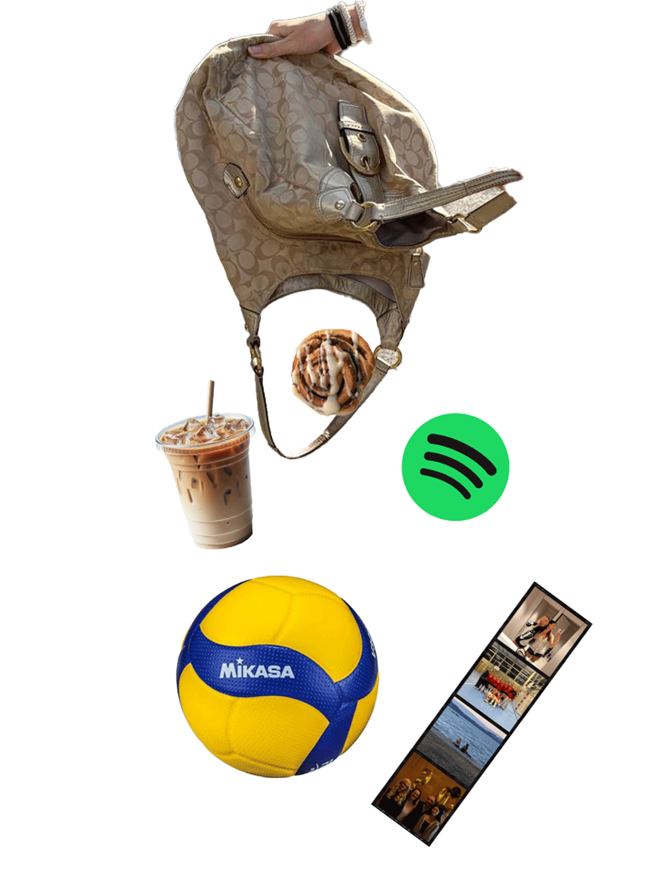
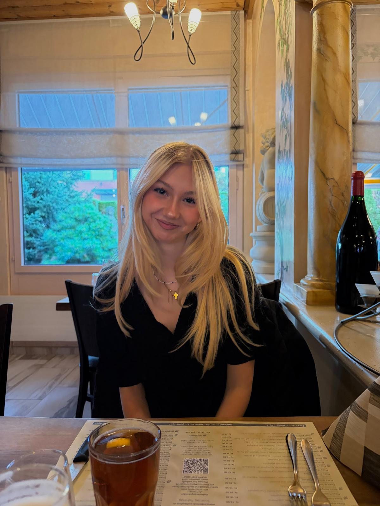
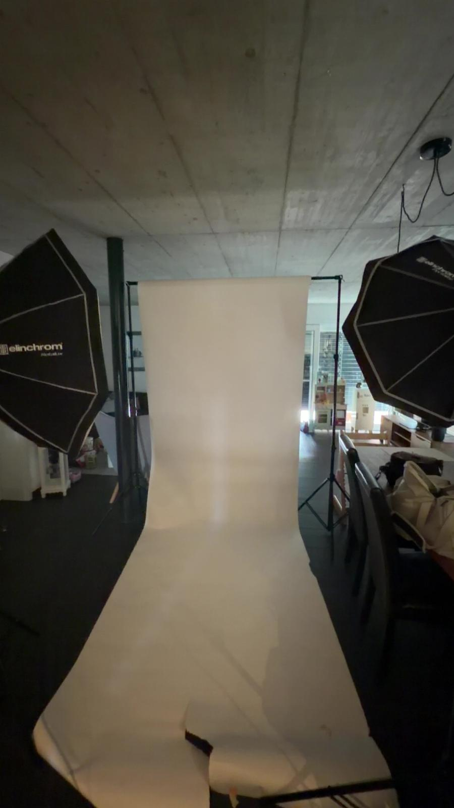
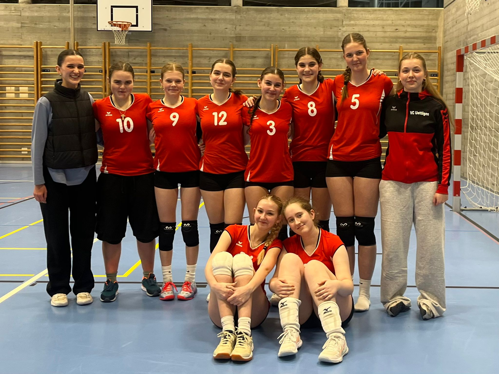
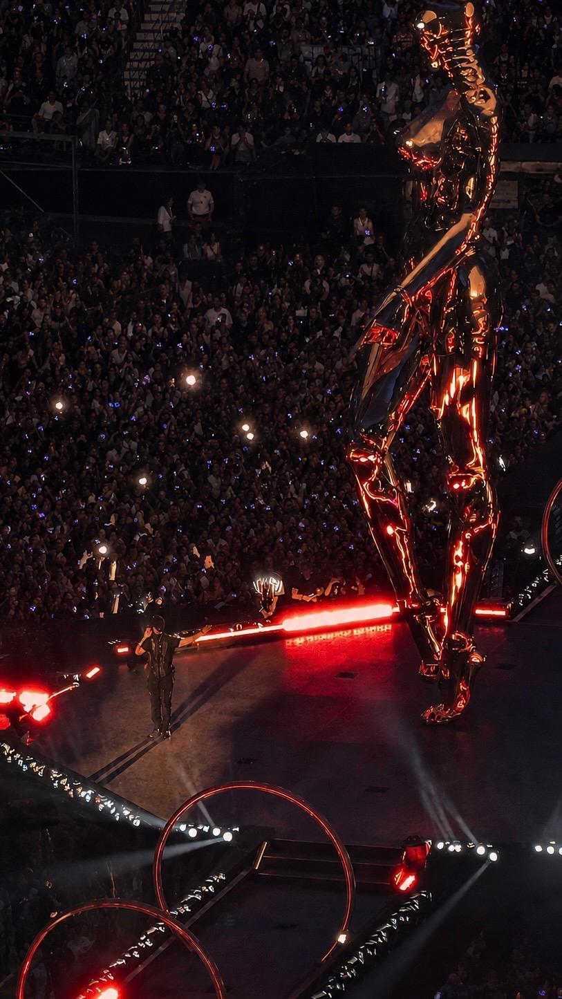

Ein paar Dinge über mich
Wer ich bin
Ich bin Michelle, 2. Lehrjahr Mediamatikerin EFZ, aufgewachsen und wohnhaft in Zollikofen. Am liebsten arbeite ich an Projekten, bei denen ich zwischen Gestaltung, Text und Bewegtbild wechseln kann – mal ein Plakat layouten, mal ein Video schneiden, mal einen Text schreiben. Mir ist es wichtig, mich in andere hineinzuversetzen und zu spüren, was ein Projekt oder ein Team gerade braucht – diese Empathie prägt, wie ich arbeite und mit anderen zusammenkomme. Neben der Lehre spiele ich Volleyball, ich mag es in einem Team zu sein und zu spüren wie man alle gemeinsam auf etwas hinarbeitet. Zum Runterkommen lese ich oder löse ein Sudoku. Mit der Kamera fotografiere ich am liebsten Menschen, vor allem meine Freundinnen, und den Rest der Zeit verbringe ich am liebsten mit genau ihnen.

Michelle
FotografieHobbys
Sprachen

Volleyball
MusikMein Werdegang
Mediamatikerin i.A.
Ausbildung zur Mediamatikerin EFZ
Sekundarschule Zollikofen
7-9. Klasse der Obligatorischen Schulzeit
Primarschule Geisshubel
1-6. Klasse der Obligatorischen Schulzeit
Skills
Eine ungefähre Einschätzung meines aktuellen Stands